안녕하세요, 프랑스어 전문가 김두우리입니다.
프랑스어를 하는 것과 설명할 수 있는 것은 다른 일이었습니다.
오래 살다 온 사람과, 그 언어로 일하는 사람은 다릅니다. 저는 프랑스어를 가르치고, 프랑스어로 일해왔습니다.
수업에서는 학습자가 막히는 지점을, 통번역에서는 언어 사이에서 사라지는 의미를,
기업 프로젝트에서는 반복되는 오류를 봤습니다. 세 곳 모두 같은 질문에서 시작했어요. 이 말이 이 사람에게, 이 상황에서, 정확하게 전달되는가.
가르치고, 뾰족한 단어로 옮기고, 데이터를 학습시킵니다.
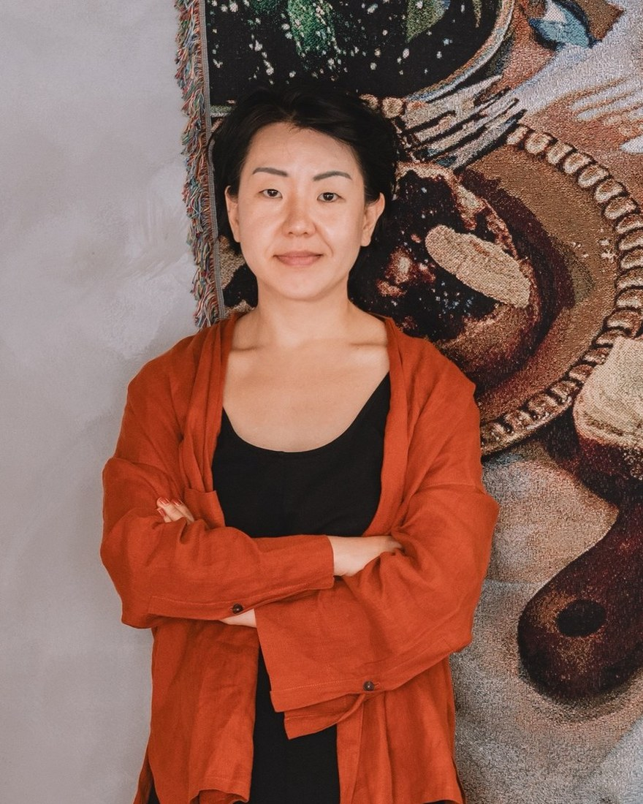
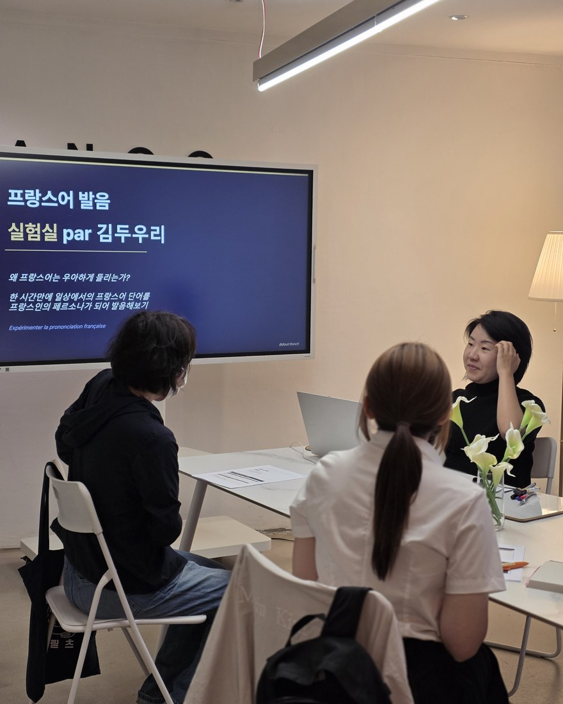
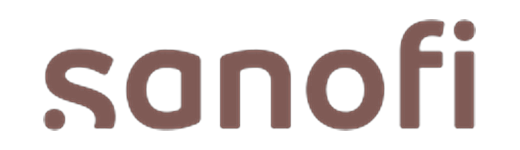
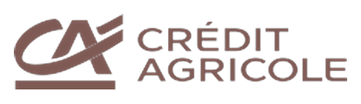
회사가 보내준 교육이 아닙니다. 업무에서 프랑스어를 쓰는 분들이 스스로 필요를 느껴 직접 찾아오셨습니다.
원어민의 감각을
학습자의 언어로 풀어냅니다.
"왜 이렇게 말하지?"까지 그냥 넘기지 않습니다.
자연스럽게 쓰이는 표현도 이유 없이 외우지 않도록, 두 언어의 차이와 구조를 정확히 설명합니다.
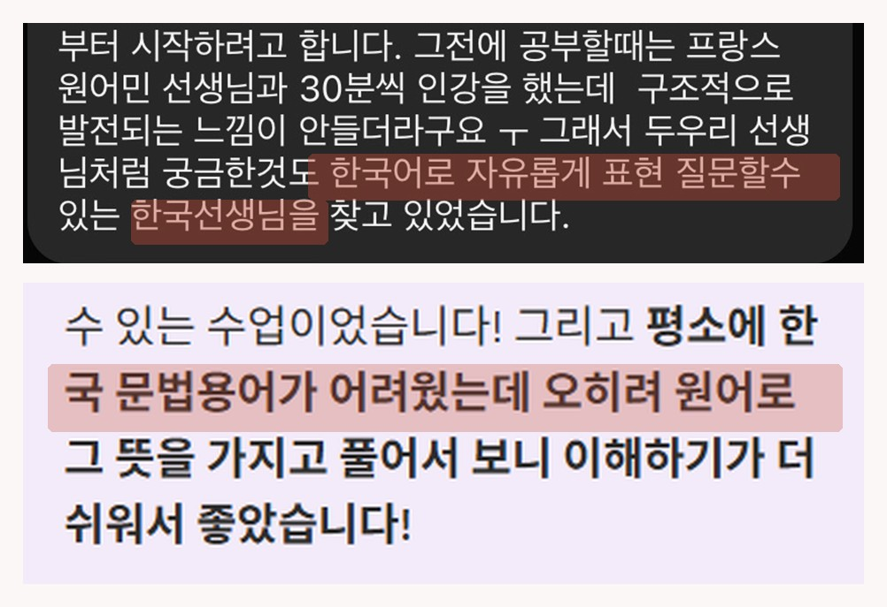
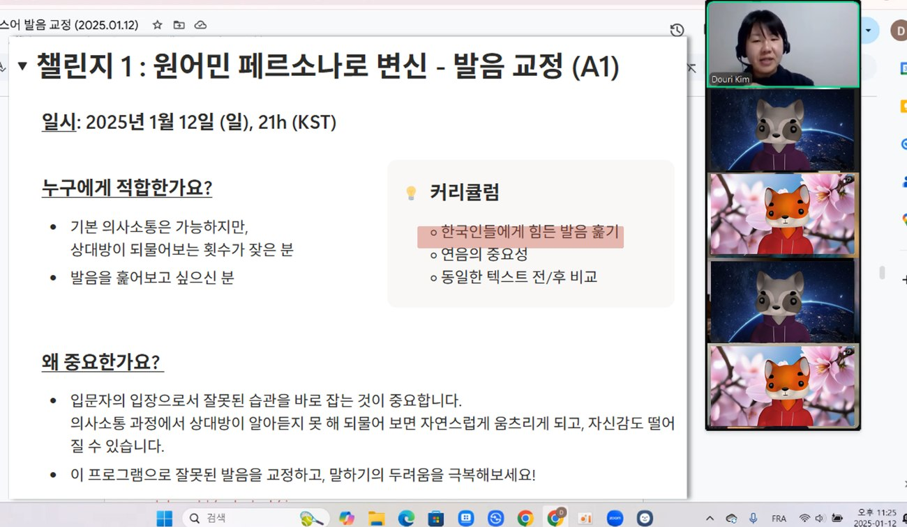
그래서 "왜"를 묻는 학습자가 여기서 답을 얻습니다.
실제 수강생들의 진짜 후기
프랑스에서는 문제를 푸는 방법도,
의견을 말하는 방식도 달랐습니다.
언어가 문제가 아니었어요. 생각하는 방법 자체가 한국식이었습니다. 그래서 남들보다 1년을 더 써서 프랑스 고등학교 과정을 다시 밟았습니다. 바칼로레아까지 마치고 나서야, 프랑스어가 제 문장이 됐어요.
그때 익힌 사고방식을 한국인이 따라올 수 있는 순서로 다시 짜서, 프랑스식 사고방식을 키우는 심층 인강을 기획까지 했습니다.
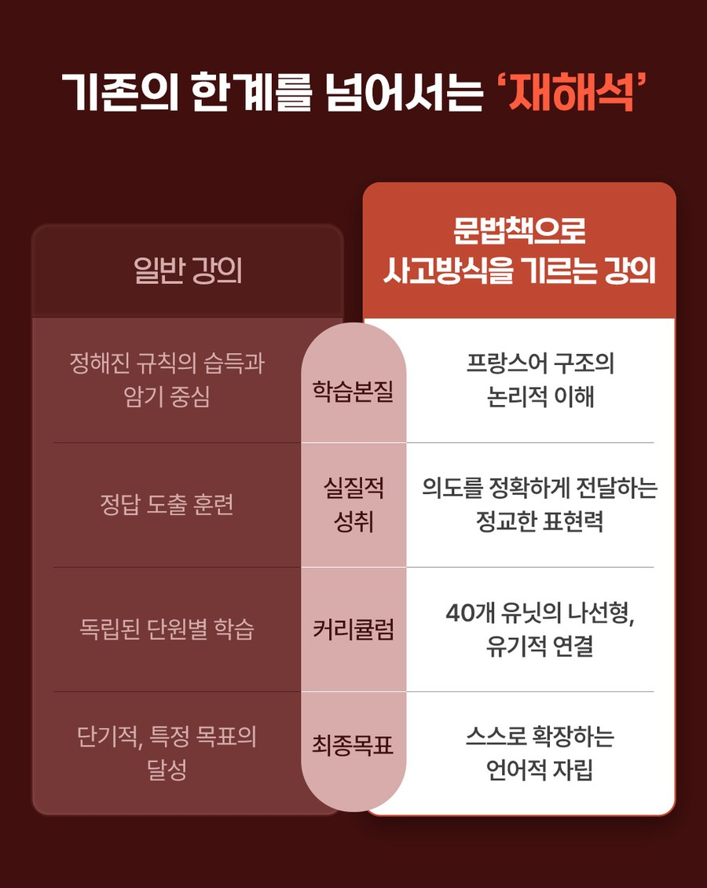
제가 1년을 더 써서 겪은 순서를, 수업에서는 건너뛰게 해드립니다.
통역도 번역도,
결국 현장에서 판단하는 일입니다.
영화 시나리오와 자막, 기업 문서와 기술 번역, 그리고 행사 현장의 순차통역까지 해왔습니다. 어려운 건 옮기는 일이 아닙니다. 원문이 생략한 것을 찾아내고, 듣는 쪽 언어에서는 그걸 어디에 넣어야 하는지 정하는 일입니다.
도구도 마찬가지예요. CAT 툴이 필수냐는 질문을 받은 적이 있습니다. 툴을 가졌는지는 실력이 아닙니다. 그 툴이 어느 단계에서 왜 필요한지 설명할 수 있는지가 실력입니다.
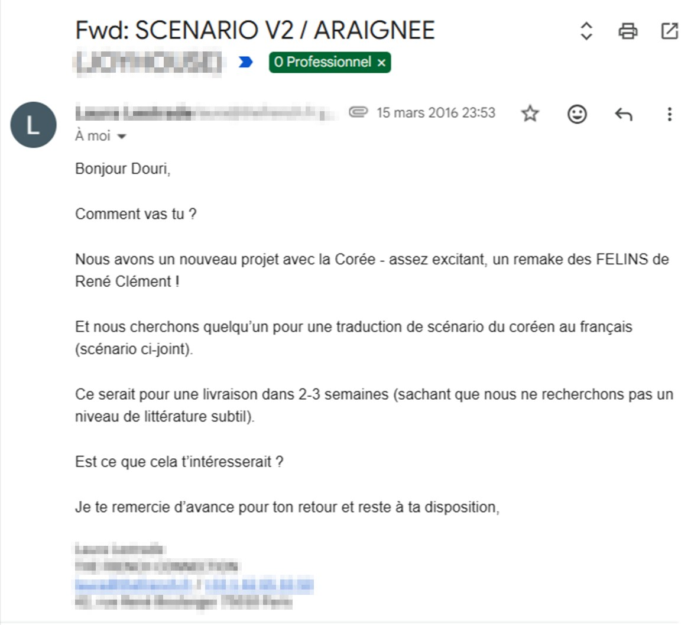
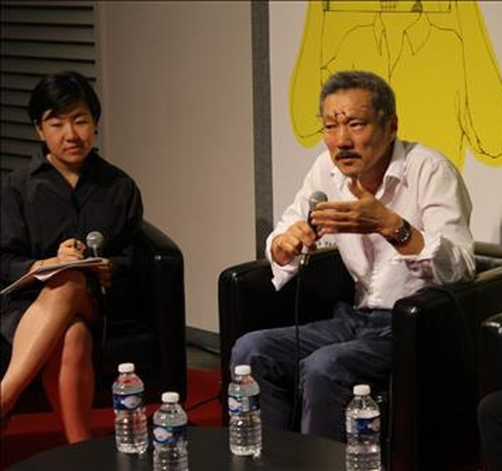
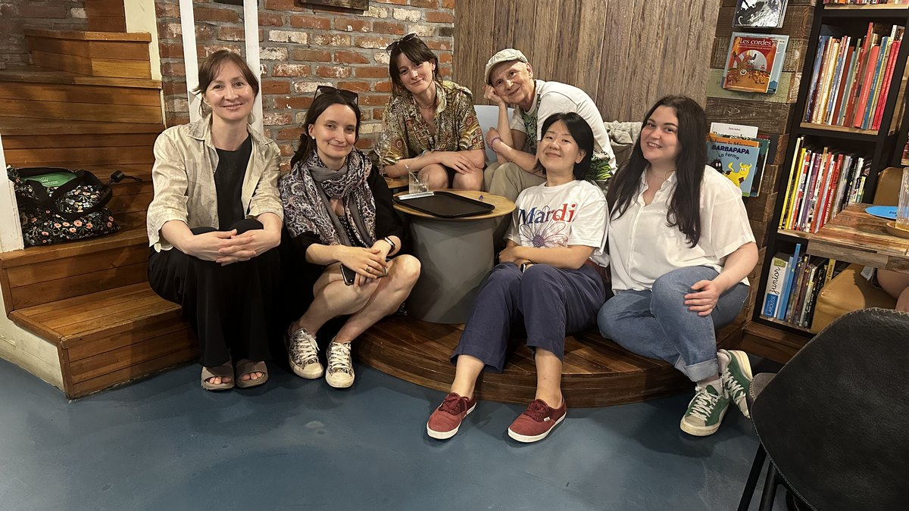
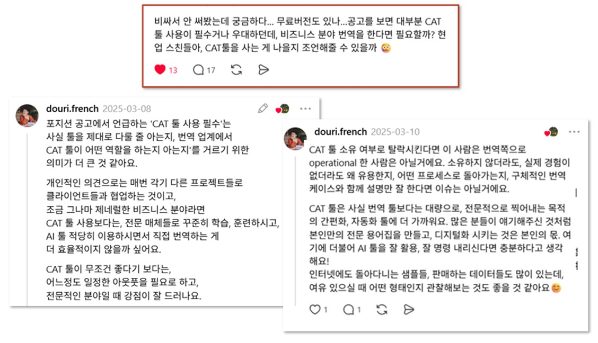
판단해본 사람만이 왜 그렇게 말하는지를 설명할 수 있습니다.
제 분석 능력은
수업 밖에서도 같은 일을 합니다.
한 사람의 프랑스어를 점검하는 일과, 기업의 음성 데이터를 대량으로 검수하는 일은 방식이 같습니다. 어디서 왜 틀렸는지 유형으로 나누고, 고칠 순서를 정하는 거예요.
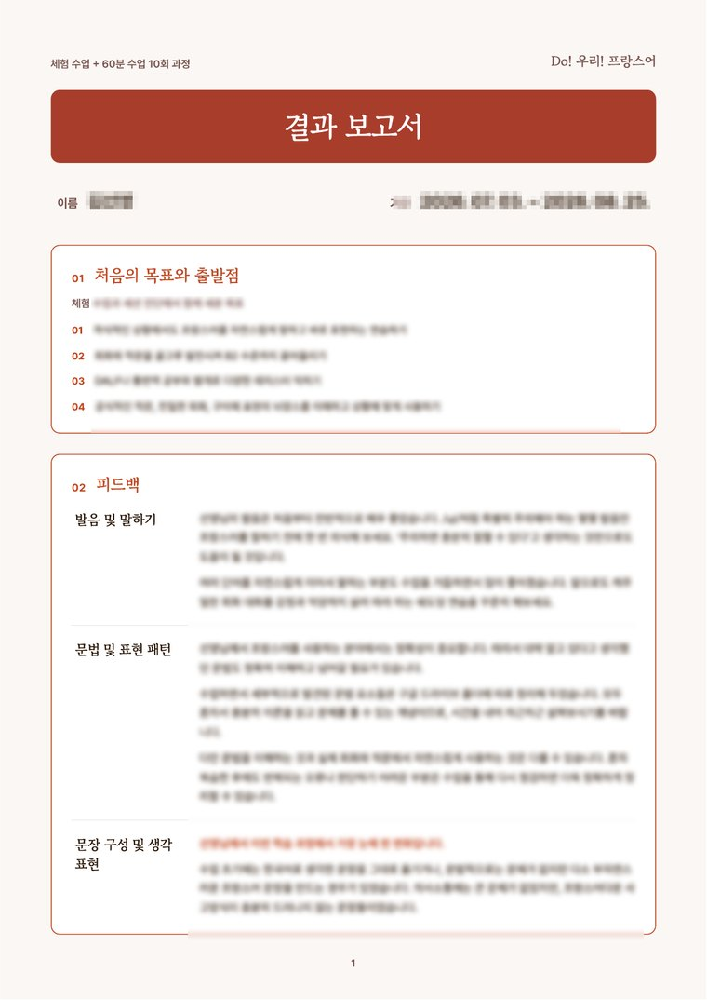
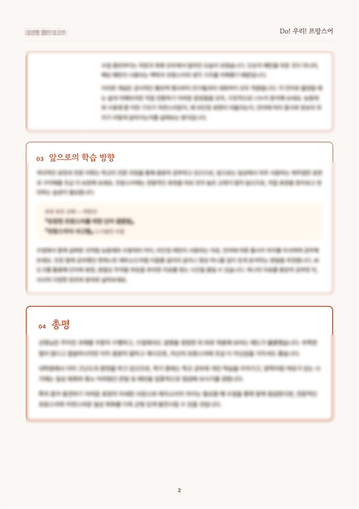
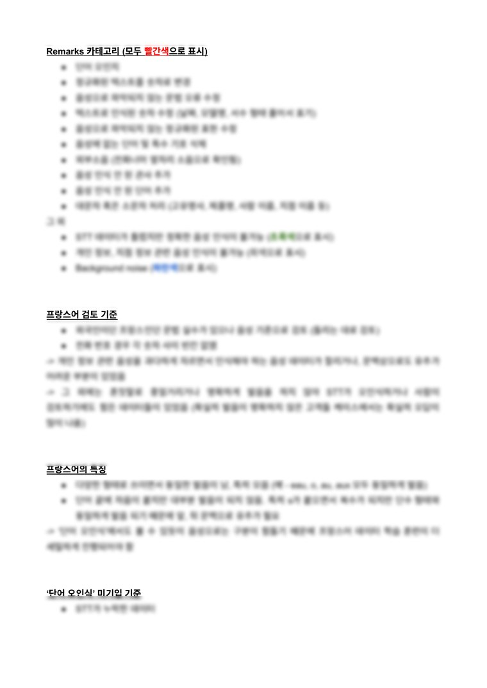
한 사람의 프랑스어에도 같은 방식이 그대로 들어갑니다.
자료도 AI도 넘칩니다.
남는 건 고르는 기준이에요.
AI 툴이 언어 교사와 통번역사를 위협한다고들 하죠. 저는 수업에서 그 도구를 어떻게 쓰는지까지 같이 정합니다. 지금 본인에게 맞는 학습 방법과 자료를 고르고, 나중에는 혼자서도 이어갈 수 있는 자립성을 만드는 게 목표예요.
혼자 남았을 때 무엇을 고를지 아는 상태로 끝나는 게 목표입니다.
가르치고, 뾰족한 단어로 옮기고,
데이터를 학습시킵니다.
전부 한 사람이.
세 가지로 보이지만 하나의 질문에서 나옵니다. 이 말이 이 사람에게, 이 상황에서, 정확하게 전달되는가. 가르치며 발견한 오류는 검수의 기준이 되고, 통역 현장의 감각은 수업으로 돌아옵니다.
오래 배운 사람일수록,
같은 이야기를 합니다.
"세심하게 교정해주신 덕분에 보다 정확하고 자연스러운 발음이 가능해졌습니다."
한○○님, 헤어 디자이너, 10회 이상 수강
"WhatsApp으로 간단히 쓴 메시지 하나도 선생님의 세심한 눈을 피해 가지 않습니다."
Antonio, 브라질, 2년 수강
"프랑스어 문법의 미묘한 차이까지 잘 알고, 항상 좋은 예시와 참고 자료를 제시해줍니다."
Roberto, 프랑스어 교사, 브라질
세 분이 말하는 건 교정을 얼마나 자주 하느냐가 아니라, 어디까지 하느냐입니다. 수업 시간 밖에서 쓴 문장 한 줄도 대상이 됩니다.